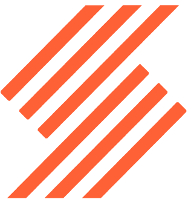
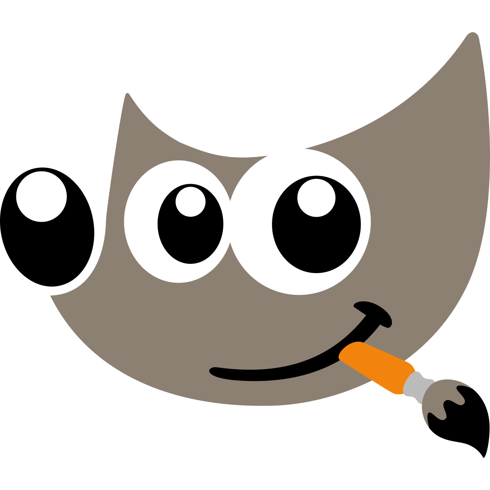
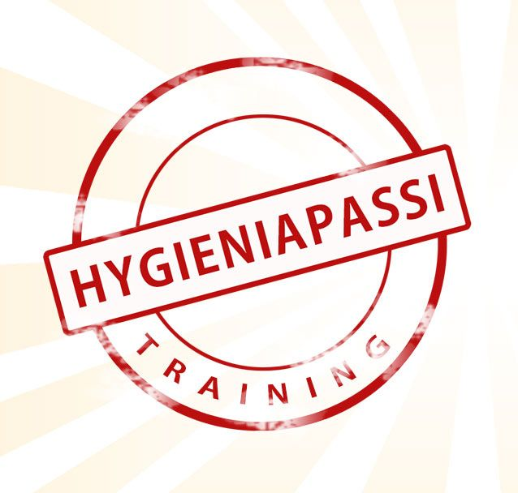
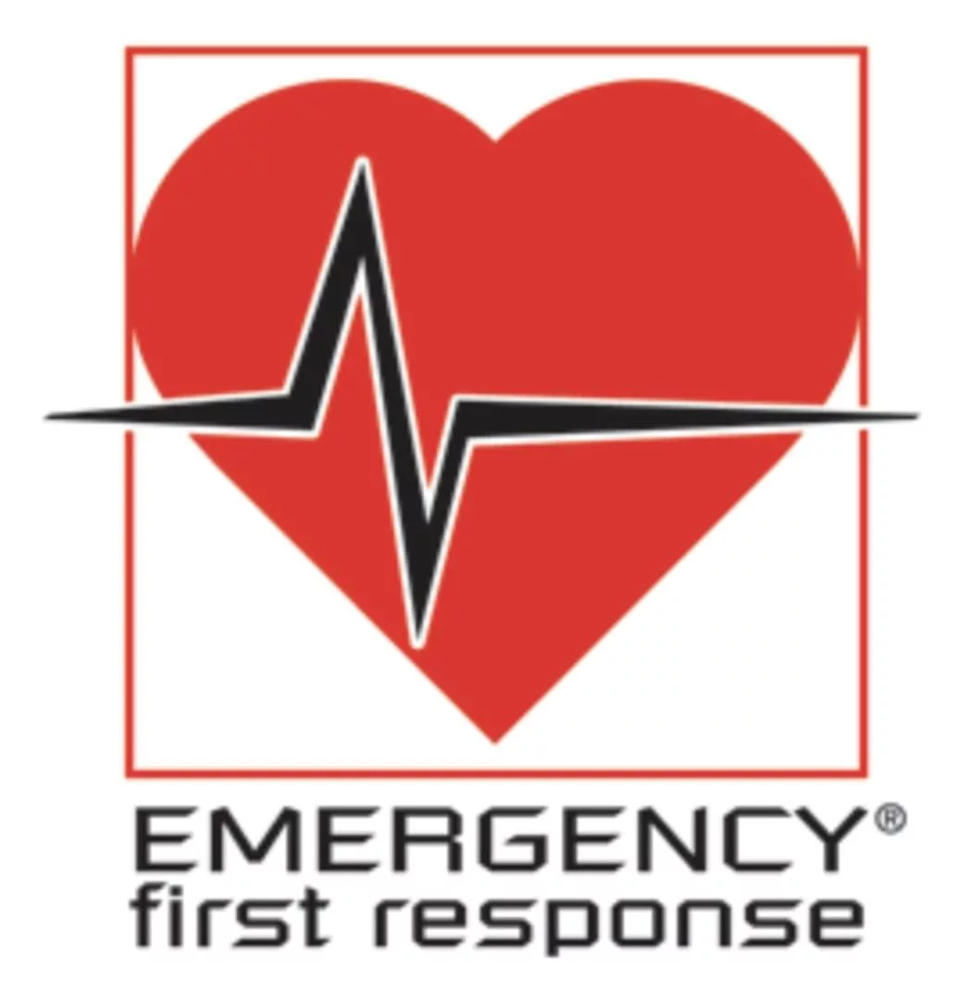
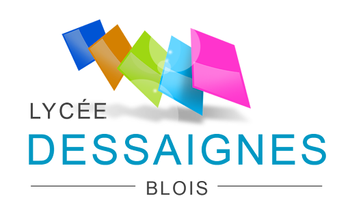

Oriane JOZELEAU
Réceptionniste
&
médiatrice culturelle
LANGUES
CENTRES D'INTÉRÊTS
- 🎨 Arts : dessin, peinture, broderie, théâtre...
- 📖 Lecture et écriture : participation à un atelier d'écriture de 2018 à 2021
- 🏛️ Histoire et patrimoine
- 💻 Développement numérique
Expériences professionnelles
Responsable du service réception
Domaine de la Brèche (49)
03/2025-09/2025 (7 mois)
Chargée d’animation auprès des publics, agent d’accueil et de billetterie
Cadre noir, Saumur (49)
02/2024 - 11/2024 (10 mois)
Agent d’accueil, de médiation et de surveillance
Domaine de Chaumont-sur-Loire (41)
10/2023 - 01/2024 (3.5 mois)
Responsable de site
Les Rendez-vous de l’Histoire de Blois (Centre Européen de Promotion de l'Histoire, 41)
Responsable de site en 2020, 2021, 2023, 2024 et 2025
Réceptionniste / Animatrice du club enfants
Camping Sites & Paysages les Saules, Cheverny (41)
04/2023 - 09/2023 (6 mois)
07/2022 - 08/2022 (1 mois)
Guide touristique
Arctic Attitude, Rovaniemi (Finlande)
10/2022 - 03/2023 (5 mois)
02/2022 - 03/2022 (2 mois)
Guide touristique
Château de Villesavin, Tour-en-Sologne (41)
04/2022 - 06/2022 (3 mois)
09/2021 - 11/2021 (2.5 mois)
04/2021 - 08/2021 (5 mois)
Agent d’accueil, de médiation et de surveillance
Château de Chambord (41)
12/2021 (2 semaines)
Guide touristique
Nordic Unique Travels, Rovaniemi (Finlande)
2020-2021 (5 mois)
Stage de deuxième année de BTS Tourisme
Agence Thomas Cook de Pau (64)
01/2019 - 02/2019 (5 semaines)
Stage de première année de BTS Tourisme
Office de tourisme de Tallinn (Estonie)
05/2018 - 06/2018 (7 semaines)
LOGICIELS
Réservations & billetterie
- eSeason
- Aparté
- Asterio
-  Resalys
Création graphique
 Wix
Wix- Canva
 Krita
Krita-  Gimp
Bureautique
- Pack Office
 Pack Google
Pack Google
SAVOIR-ÊTRE
- Rigueur
- Écoute
- Cohésion
- Minutie
- Organisation
- Adaptabilité
FORMATIONS
Formations professionnelles
-  Certification "Pass hygiène" : certification qui atteste des connaissances dans le domaine de l'hygiène alimentaire, effectuée en Finlande
-  Formation aux gestes de premiers secours : certification Padi, spécifique aux conditions nordiques (RCP et premiers secours), effectuée en Finlande
Parcours scolaire
-
2021 : Licence Professionnelle Protection et Valorisation du patrimoine historique et culturel à l'Université du Mans
Parcours Développement et protection du patrimoine culturel - médiateur du patrimoine
Note obtenue : 14,20/20 -
2019 : BTS Tourisme au
Lycée des Métiers de l'Hôtellerie et du Tourisme de Blois
Option chinois
Note obtenue : 13,31/20 -
2017 : Licence d'Histoire de l'Art
L1 et L2
Université de Tours -

2014 : Baccalauréat Littéraire au
Lycée Dessaignes de Blois
Parcours Littérature Étrangère en Langue Étrangère
Option théâtre
Note obtenue : 11,35/20